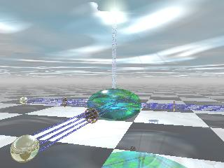

Welcome to Testbed Control

Under Construction
Links
- Other Flux Testbed
Page
- This contains more information about what the Testbed is
and what it is for.
- Current
Documentation
- This page has links to hardware and software details, a
tutorial, and all the new software we've written for the testbed.
-
Web Interface (UNDER CONSTRUCTION)
- (If your browser brings up a dialog about the
server certificate, make sure to accept the certificate)